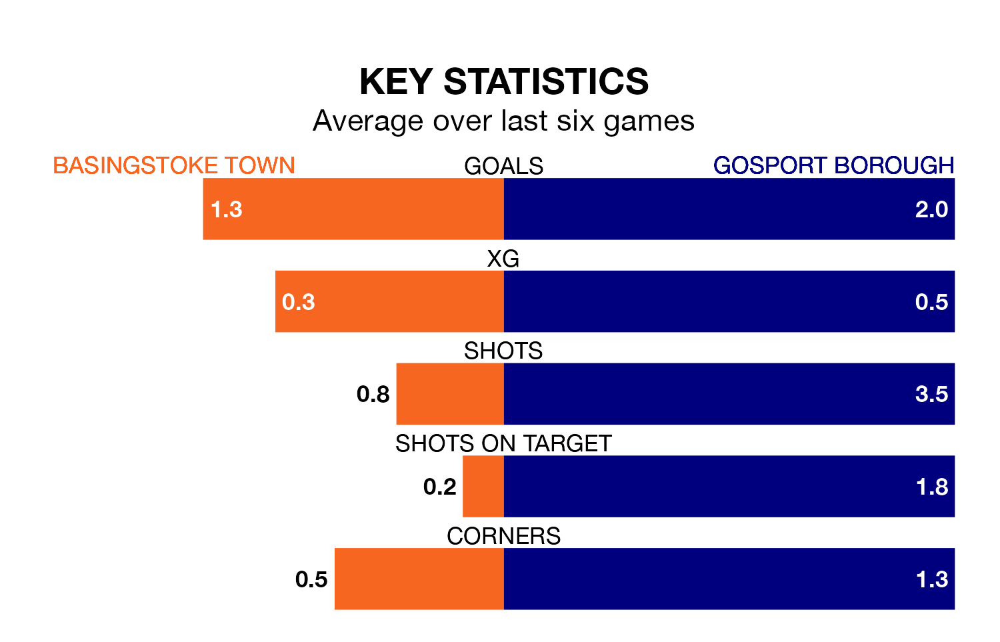

Gosport Borough visit Basingstoke Town on Friday on the back of three consecutive wins in the Southern League Premier South.
Gosport have picked up 12 points from their last six games, and they face a Basingstoke side who drew their last match, and have collected 13 points from the last possible 18.
Gosport are second in the table after 35 games, of which they have won 20 and drawn seven, earning 67 points.
Basingstoke are eight places behind Borough in 10th, with 13 wins and eight draws putting them on 47 points.
With 66 goals in 35 games so far this season, the away team are scoring more than average in the league with 1.9 goals per game. And they are conceding fewer than average, letting in 34 goals at a rate of 1.0 per game.
Town, meanwhile, are average scorers, with 1.7 goals per game. They have conceded 2.1 goals per game.
In the last 10 years, Basingstoke and Gosport have played each other on 10 occasions. Basingstoke won three of them, Gosport five, and they drew twice.
On average, Basingstoke scored 1.9 goals and Gosport 1.5 in those matches.
Their last meeting was on August 16, when Gosport won 4-1 at home.
Basingstoke's last match was on Saturday, a 1-1 draw against Chesham United.
Gosport beat Didcot Town 4-0 last time out, also on Saturday.
Updated: 12:16 (UTC), 25/03/24